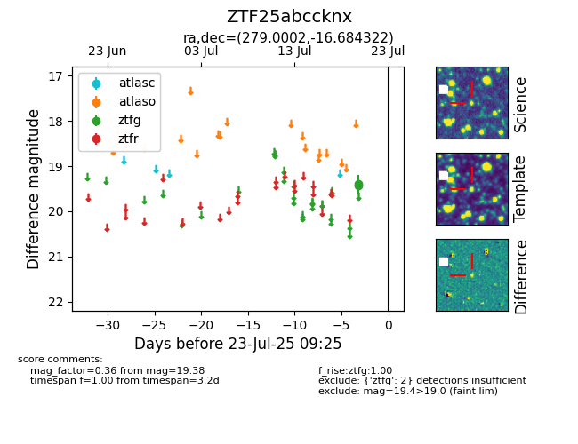

Target ZTF25abccknx at 2025-07-23 11:48, see:
FINK: fink-portal.org/ZTF25abccknx
Lasair: lasair-ztf.lsst.ac.uk/objects/ZTF25abccknx
ALeRCE: alerce.online/object/ZTF25abccknx
alt names
ZTF25abccknx (ztf,fink)
coordinates:
equatorial (ra, dec) = (279.0002,-16.68432)
galactic (l, b) = (16.3321,-4.21694)
photometry
last ztfg=19.38
2 ztfg detections
